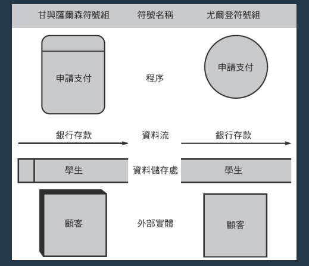
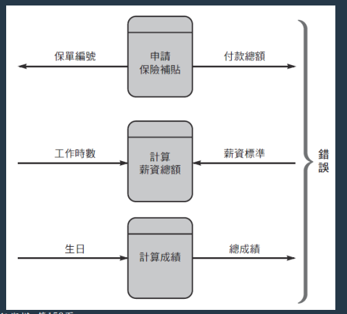
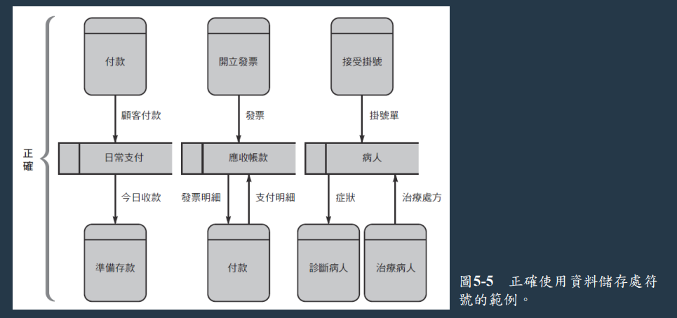
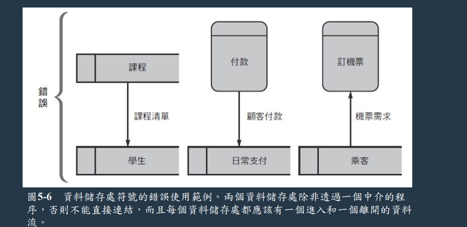
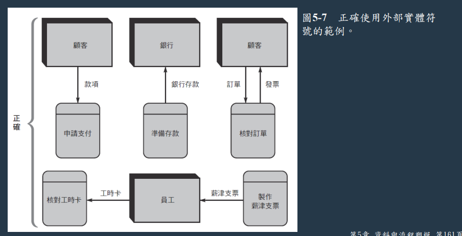
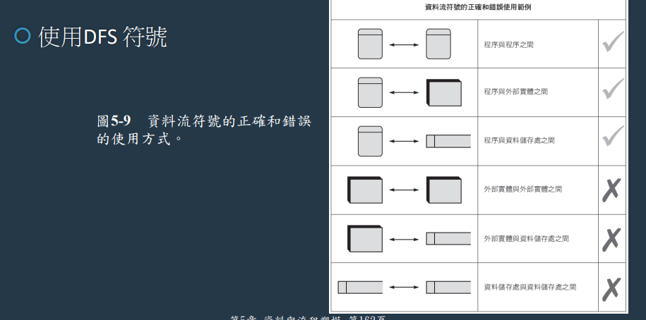
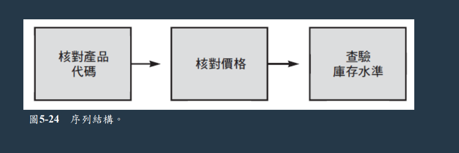
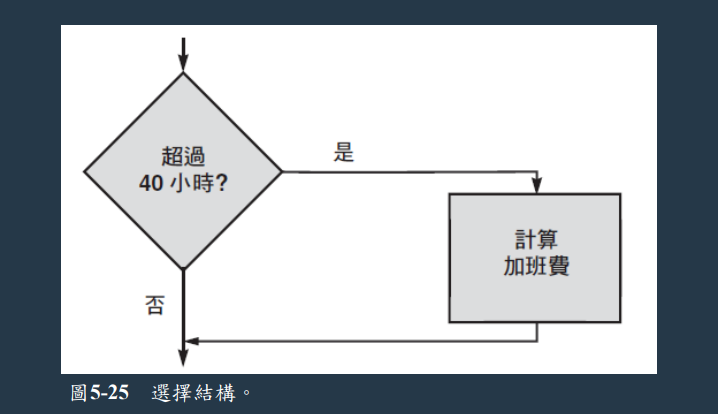
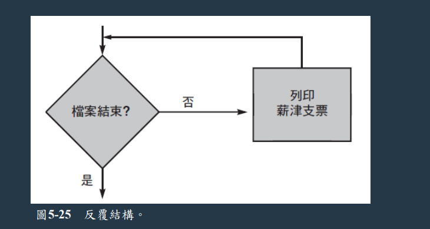

陳杰龍的筆記網站
陳杰龍的筆記網站 主頁
主頁 歸檔
歸檔 分類
分類 其他
其他 關於我
關於我 系統分析與設計 期末筆記
系統分析與設計 期末筆記
第五章
- 四模型法與其優缺點
- 邏輯模型(logical model)，表示系統必須做成什麼(what) 樣子
- 實體模型(physical model)， 描述系統如何(how)建構
- 實體模型
- 邏輯模型
- 新系統邏輯模型
- 新系統實體模型
- 優點
- 能在進行任何修改或改進之前，清楚地明白現行系統的功能
- 可將舊系統的邏輯模型適應新系統的邏輯模型
- 缺點
- 建立舊系統的邏輯和實體模型需付出額外的時間
- 資料流向圖定義與基本符號
- 定義
- 使用數種不同的符號來呈現系統如何將輸入資料轉為有用的資訊
- 基本符號

- 定義
- 三種必須避免的程序與資料流結合方式 (黑洞、灰洞等)
- 自然生長(spontaneousgeneration)
- 程序沒有輸入
- 黑洞(black hole)
- 程序沒有輸出
- 灰洞(gray hole)
- 輸入明顯無法產生其輸出

- 自然生長(spontaneousgeneration)
- DFD圖符號正確/錯誤判斷
- 資料流必須至少在其中一端存在一個程序符號
- 資料儲存處至少都有一個流入和一個流出的資料流，利用這些資料流連接到程序符號
- 一個外部實體可以是資料的來源端或接收端，或兩者都是，而實體一定要透過資料流連接到程序




- 繪製DFD的準則/技巧, 如系統環境圖、DFD圖0等
- 一整頁來繪製系統環境圖
- 每個符號都使用唯一的符號
- 不要出現交錯線條
- 為每個程序提供一個唯一的名稱和參照號碼
- 使用資訊系統的名稱來命名系統環境圖中的程序
- 盡可能取得更多使用者輸入跟反饋
- 模組化設計
- 基於三個邏輯(控制)結構的結合，是程序的組成要素
- 序列(sequence)

- 選擇(selection)

- 反覆(iteration) 迴圈 (looping)

- 序列(sequence)
- 基於三個邏輯(控制)結構的結合，是程序的組成要素
- 結構化英文
- 標準英文的一個子集，可以清楚又精確地描敘邏輯程序
- 規則
- 只使用序列、選擇、反覆做為三個組成要素
- 清楚又精確地描述邏輯程序，使用縮排
- 盡可能用最少單字、簡單表達
- 決策表/決策樹 (畫法)
- 決策表 vs. 決策樹
第六章
- 何謂物件導向分析? 其包含三個元素(物件、屬性、方法) 並簡易說明
- 何謂類別? 有哪幾種分類? 並舉例說明這些類別種類之間的關聯性
- 何謂繼承? 請說明其物件關係
- 循序圖與類別圖之定義與其相關的符號說明
第七章
- 傳統式開發策略的優缺點 (請舉例1~2個)
- Web式開發策略的優缺點 (請舉例1~2個)
- 近年來的開發趨勢策略? (請舉例兩個策略並說明)
- 內部開發 vs. 套裝軟體採購時必須考慮各種因素
- 委外費用模式包含哪幾種並說明
- 海外委外的疑慮
- 未加權/加權後的網路專案評估模型
- 軟體採購流程之方案評估包含哪幾種方法 (舉例兩種)
第八章
- 介面設計師的七大基本原則 (舉1~2個原則)
- 使用者介面設計指導方針 (十個規則)
- 常見的八項資料驗證規則